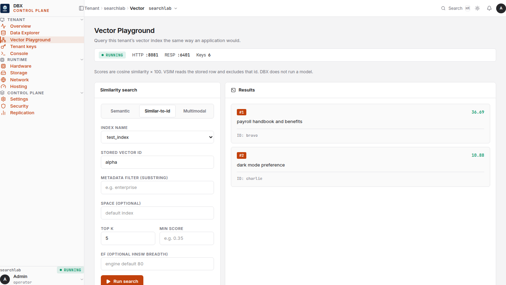

acme
session empty
vectors 0
WAL seq 0
Memory engine, not a shared cluster.
DBX holds working state and vector memory in the same process — and that process belongs to one tenant. Isolation is a directory, a WAL, and an HNSW index. Not a prefix you hope nobody forgets.
Browser sketch of the product, not a live node. GET on harbor cannot see acme’s session.
Why it exists
The stores you already run assume one pool. You bolt customers on with names. That works until it doesn’t.
One missing tenant:{id}: in one query is a cross-customer data leak.
Session in a cache, embeddings in a vector DB. Dual writes. Two pages at 3am.
You cannot restore one customer. You snapshot the whole machine.
A scan, a prefix sweep, a blast radius. Off-boarding becomes a project.
One busy tenant evicts a quiet tenant’s working set from a shared pool.
Sketch · not a live node
Two isolation models, side by side. Left is the accident on a shared cluster. Right is DBX: AUTH switches process, not a key name. This widget does not talk to a node.
One KEYS user:* returns alice and bob. The prefix was the only wall.
AUTH switched workers. Bob’s engine never held alice’s keys.
What has to stay true in the code
Five claims. RESP is how you connect, not why you buy.
POST /api/provision creates a live isolated engine — own data directory, WAL, HNSW, snapshots. Backup and delete hit exactly one customer.
KV with TTL and HNSW vectors, one process, one connection, one directory, one backup archive. Recall is VSEARCH, VSIM, and VFUSE on that tenant — embeddings stay with the caller.
SQ8 mmap vectors. Idle tenants sit in page cache. You pay for who is awake, not who signed.
Dashboard, console, explorer, playground — compiled in. Embeddings never leave the network.
Linux production seals each tenant as its own process with a Landlock-restricted filesystem, an encrypted WAL and index, and a Unix socket only the orchestrator can open.
redis-py, ioredis, go-redis already speak RESP. Useful for trying DBX. Not a substitute for a tuned shared KV cluster.
Recall · in-browser
Six 3-d stand-ins. Cosine in the browser. Not HNSW, not a live node, not a model. The wire on a real engine is the same shape.
Certified ANN p50 on the published profile is 2.304 ms. This widget does not measure that. Embeddings stay with the caller; DBX does not run CLIP or MiniLM.
Operator UI, in the binary
Not a mock. Screens from the embedded dashboard: the vector playground, tenants, overview, and the RESP console. Click the numbered pins on the playground.



Semantic is VSEARCH with a query vector. Similar-to-id is VSIM — load that stored row, exclude self. Multimodal is VFUSE across named SPACE graphs. DBX does not run CLIP or MiniLM.
This capture is VSIM test_index alpha. The engine reads the stored embedding for alpha and ranks everyone else in that tenant index.
MIN_SCORE drops weak cosine. EF is HNSW search breadth for this query only. SPACE selects a named graph in the same tenant directory.
Live ranks: bravo 36.69, charlie 10.88. Cosine × 100. Self (alpha) is excluded. Not a screenshot of random floats.
Fit
| If you need | Use | Why not DBX |
|---|---|---|
| Peak shared KV throughput | Redis / Dragonfly | Their design target. Ours is isolation. |
| Billion-vector ANN | Qdrant / Milvus | DBX is sized for per-tenant working sets. |
| Fully managed vectors | Pinecone | DBX is software you run. Deliberately. |
| System of record | Postgres + pgvector | DBX sits in front of the system of record and underneath the agent. |
Idle cost
Isolation Kernel strict idle workers sit in the 14–17 MiB band. This slider multiplies the midpoint. No invented dollar figure.
CI soaks 12 idle / 4 active. Operators run make soak (100 idle / 25 active). That is not a 100-orchestrator-process soak.
Fit check
Operator walkthrough
Real screens from the embedded UI. No stock footage. Advance with the arrows or sit with the loop.
BSL 1.1
Free to self-host, including inside your own SaaS. Cannot offer managed DBX to third parties without a commercial deal.